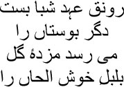
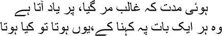

6
You love beautiful faces, Asad
You should see yourself once
et’s change the direction of this story a bit, my friends. Listening to the two of us chattering away from our graves is bound to be tiresome. Why should you even bother to pay attention? Your lives are no less full of stories than ours, if you’d like to tell them, by God, both of us will listen closely. But for now, let me tell you a qissa that isn’t about either Mirza sahib or me. You’ll enjoy this fluffy little tale—it isn’t part of Mirza sahib’s existence, which was perpetually weighed down by a rock. You have to let fresh air into your stories now and then; I shall never consider anyone a real storyteller unless he can do this. These people’s stories make you choke, as though they have thrust you into a prison where you must follow their diktat. For heaven’s sake, words are flowers, if you can’t see their colours or smell them, they’re nothing but dead letters. Didn’t Hafiz sahib say:

If the nightingale’s song doesn’t reach the rose, then why fill page after page with words? A hurt pride lurks within language, my brothers.
You remember the dervish, don’t you? The one who surfaced from the Yamuna to appear before Asad. Just as Shamsuddin Tabrizi had come into Jalaluddin Rumi’s life once, after which, of course, Rumi entered a different kind of existence altogether. This Shams was an extraordinary character, my brothers. He was possessed with divine madness. A story about him is on the tip of my tongue now, I might as well tell all of you. Don’t imagine it has nothing to do with Mirza sahib’s life. I cannot even begin to count the number of stories that Mirza sahib’s life is entwined with. When you hear the story about Shams, you’ll know just where Mirza sahib is concealed in it.
Awad al-Din Kirmani was a Sufi shaikh. He believed that Allah was to be found in this very world—within all the beauties of creation. He was sitting by a lake one night, gazing at the reflection of the moon. Chancing to meet him, Shams asked, ‘Why do you gaze upon the water, shaikh?’
— I am looking at the reflection of the moon.
— But why, does your neck ache?
— No.
— Then all you have to do is look up at the sky to see the moon. Or have you gone blind? Simple things should be looked at in simple ways.
The shaikh realized his mistake.
— You are my pir, huzoor, my master. Allow me to serve you.
‘You are not strong enough to meet my requirements,’ responded Shams.
— I am, huzoor. Take me with you.
Shams burst out in laughter. Then he said, ‘Then get some wine. We will drink together in the bazaars of Baghdad.’
But alcohol is sacrilege in Islam. What would people say if the shaikh were to drink in the bazaar? His honour would be tarnished. ‘How can I do that, pirzada?’ he mumbled.
‘You will never prove adequate,’ Shams roared. ‘You do not have the power to reach the court of Allah. I am looking for the man who can reach the vicinity of the all-knowing one.’
It was in Jalaluddin Rumi that Shams had found such a man. Sometimes I can see Mirza sahib drinking with Shams in front of the Jama Masjid. Maula Rumi is sitting opposite them. He has written a new masnavi, about his lovers Shams and Mirza sahib. If only all this had been true, just imagine, the world would have become as beautiful as the design on a jamevar shawl.
Oh no, don’t look at me so disbelievingly, my brothers. I haven’t forgotten anything. My memory is sharp. Look, when you consider the world I grew up in, when you consider the flowing currents of refugees, mohajirs, that I was witness to, you will know that I would not have survived had it not been for the glow of memories. So many mohajirs—do you know what I think, I think the twentieth century should have been named the century of the refugee. The century of forgetting your name, the century of changing your name. Have any of you read my story ‘Thanda Gosht’? I was hauled to court in Lahore on grounds of obscenity for writing this story titled ‘Cold Meat’. Oh no, you may want to hear the story of ‘Thanda Gosht’ now, but we have started a different story today, my brothers. Let’s keep ‘Thanda Gosht’ for another day. Don’t forget, we have to spend many more centuries in these graves of ours before the universe comes to an end, there will always be time for ‘Cold Meat’ later.
Right. I hope you remember that the dervish gave Asad a mirror. In the mirror Asad has seen a pattern of birds flying against a sky as blue as his ammijaan’s pashmina shawl. The birds were on their way to their king Simurg. This is a profound tale, my brothers. The lord alone knows why the reflection of this story appeared in the mirror that the dervish gave Asad. But then, how can we hope to know of the Creator’s intentions anyway? Do you know what I think, it is because we cannot hope to know that we can write all these words that we do. That’s the best thing about a story, you can write, keep writing, what does it matter to you what some chutiya, some fucker of a critic says? A story is nothing but a story—it lives alone, it dies alone.
Pardon me, my brothers, I inevitably stray into a maze when I talk. I have spoken to thousands of people in my life—living people and dead people. When I couldn’t talk, I felt as though I was buried under a rock. Ismat used to laugh at me. You know Ismat, don’t you, Ismat Chughtai—in her presence I used to be intoxicated by the need to talk. Ismat could speak beautifully too, behind those glasses her eyes were like the deepest pools. I would simply submerge myself in those pools and keep talking, while Ismat would stare at me with her large eyes. I wanted to swallow those eyes of hers some day. I never got round to telling Ismat this, however. She would have pulled my hair out at the roots.
You do remember the sight of flying birds in the mirror that the dervish gave Asad? A story written by Fariduddin Ittar appeared in the mirror. Just imagine the wonder of it all! A story in a mirror! And every story is itself a mirror, isn’t it? I for one have never been able to tell when the story and the mirror become one. Never mind! But before I recount the story, I simply have to tell you a little about Ittar sahib. He was a messenger of God, a Sufi saint, but you couldn’t find a match for him when it came to telling stories. The only person he could perhaps be compared to was Abdul Rahman Jami. Ittar sahib was born in Nishapur in Persia, almost eight hundred years ago. He owned a pharmacy where he made both medicines and ittar. He ran a thriving business. One day, a dervish appeared in his pharmacy. It was a very large shop—he gaped at the things on display and then stared at Ittar sahib. Naturally, being stared at this way made Ittar sahib uncomfortable. ‘Why do you look at me like that, huzoor?’ he asked.
The dervish smiled—I was wondering how you’ll ever give up all these riches to go to your grave.
Enraged, Ittar sahib said, ‘I will die one day, just like you. How can it be any different?’
— But I have nothing but this tattered robe and this begging bowl, bhaijaan. You have so many riches. How will you die just like me?
— I will die exactly like you.
Do you know what happened then, my brothers? The dervish lay down, using his begging bowl as his pillow. Closing his eyes, he said, ‘Bismillah ur-Rahman ur-Rahim.’ Gibrail appeared, ready to take him away as soon as his life ebbed out. Ittar sahib stood like a stone, watching this miraculous death unfold. Then he shut down his pharmacy forever and set off on the road to his Din, the true way to the Lord.
The birds that Asad saw in the dervish’s mirror were born in Ittar sahib’s story. You’ve had to put up with a lot of bakwas, a whole heap of nonsense, all this time, so let us have the story now. But you know what, I love switching from one story to another, in these stories I am sometimes the dervish, sometimes Ittar sahib, sometimes Kallu. And as for Mirza sahib, he is deep inside me. You must have heard that sher of his:

Ghalib has long been dead, but we remember him
Wondering, what if this had happened, or that?
What would have happened if Saadat Hasan Manto had become Asadullah Khan Ghalib? I said this once to Shafia Begum; do you know what she said, my brothers? You’ve lived all your life as one character or another, Manto sahib, when will you reveal yourself? Shafia Begum didn’t understand that Manto lives in different characters. Without those characters, there can be no Manto. Shafia Begum asked me once, ‘What have you achieved with all these stories, Manto sahib? No one will give you anything for them. Set up a shop instead.’
— And what shall I do with the shop inside my head, Begum?
— The shop inside your head?
— This shop with hundreds of stories. Manto will die if the shop closes down, Begum.
Gustakhi maaf, my brothers, pardon me. I’ve drifted a long way. Your eyes are shining with anticipation; I know you’re waiting to hear the story. But you must indulge your Manto bhai. Memories, my brothers, so many memories, they just drag me back to the past as I talk. I cannot resist them. If I could have, I wouldn’t have had to die like a stray dog in Pakistan.
But let’s talk of birds now. Let’s talk of the most tender of souls in the universe. You know what, each of our hearts is a bird, sometimes imprisoned, sometimes flying freely in the sky. I really wanted to spend a night holding a sparrow to my breast, but they can’t be caught, they’re so restless. On a perch one moment, they’ll fly off the next. If they were chirping a minute ago, they’re staring wistfully into the distance now. Birds are like that, all they know is that the world is actually a place to wander about, go here and there, fly about, and then die one day without even being aware of it.
One day all the birds gathered together in a conference. Why? They had no emperor, they would have to search for one. All searches need a murshid, a guide—who would be their teacher? The collective decision was that only the hoopoe could be their guide. The hoopoe was Sulaiman’s favourite bird. He used to bring news of Queen Bilqis from the town of Sheba. So only the hoopoe could be their teacher; he was the only one who could take them to their king. The hoopoe had a clump of feathers on his head and Bismillah’s name on his lips. ‘Look, you can certainly try to seek Jahanpanah,’ the hoopoe told the birds, ‘but it is a long and difficult route. To undertake this journey, you have to shake off the life you have led up to this moment; if you can do that, if you can leave everyone you love, only then can I show you the way.’
The birds were shattered; each of them came up with a different excuse. Oh no, they couldn’t go on such a long journey. The nightingale was the first to speak. ‘I cannot go anywhere. Only the rose understands my secret love. How can I go away from her? My love for the rose will last all my life.’ The hoopoe told the nightingale, ‘You are just looking at external beauty. The rose may smile, but the smile is not for you. She appears to look at you and smile, but then she wilts and dies. Do you know why she smiles at you? Because you do not realize that she will soon wilt and die.’
— But I will not leave the gulbahar and go anywhere, murshid.
— Then let me tell you a story. Fluttering his wings a few times, the hoopoe settled down. ‘Bismillah ur-Rahman ur-Rahim,’ he muttered. ‘Give me language, O Lord, so that I can tell the nightingale this story properly.’ After a few minutes’ silence, he shouted, ‘Listen, nightingale, and remember this story. After that, you can do as you please.’
— No story can match up to the rose when she blooms, pir sahib.
— Of course. But listen anyway. A story won’t give you an upset stomach, will it?
— Very well, tell me. The nightingale squeaked.
— There was a nawab who had a daughter. It cannot be explained just how beautiful she was. Her hair was as black as a sky in which no stars twinkle, her body gave off the fragrance of musk deer, and as for her glance when she spoke, it was sweeter than honey. And her complexion? It beat the ruby hands down. To tell the truth, anyone who saw the maiden fell in love with her. But it is impossible to read the mind of the Lord. One day a dervish saw the girl and was smitten. The dervish was eating when he saw her, and his food slipped from his hand when he set eyes on her. The maiden smiled at this. The smile was what did him in, the dervish lost his heart totally.
— And then?
— He planted himself in front of the nawab’s haveli for seven years, spending his days with the cats and dogs on the road. For seven years the dervish kept weeping for the woman he had fallen in love with. Then the maiden’s guards decided to murder him.
— Did they?
— Coming to know of the plan to murder the dervish, the girl felt pity for him. Stealing outside the palace one day, she told the dervish, ‘You’re so strange! I’m the daughter of a nawab, how did you even think of marrying me? Look, just go away and don’t ever come back. You’ll be killed if you’re still here tomorrow.’
— What did the dervish say? The nightingale fluttered his wings impatiently.
— The dervish said, ‘Ever since I saw you, life and death have become one and the same to me. I am not afraid of being killed. No power on earth can dislodge me from the door of your palace. Your guards want to kill me, don’t they? So be it. But will you answer the riddle first?’
— What riddle?
— Why did you smile at me?
— You really are an idiot. I felt pity when I saw you, even your food had slipped from your hand. What do you expect me to do but smile?
— And then? The nightingale’s eyes brimmed with tears.
— The hoopoe said, ‘Your rose is like that maiden. Beautiful only in appearance.’
With different stories like this one, the hoopoe dismissed all the excuses offered by the birds. Then the birds said, ‘We should take a tohfa, a gift, for the emperor. You tell us, o guide, what we should take for Emperor Simurg.’
— Zikr. The chanting soul. The emperor’s court has everything. But he wants souls that have been purified by fire and by suffering.
For years on end the birds flew on behind the hoopoe. They had to cross not one, not two, but seven valleys. Many birds died on the way, many more no longer had the strength to fly. Only thirty birds arrived eventually at Emperor Simurg’s palace on Mount Qaf. The sentries simply wouldn’t let them in. But they had been so becalmed by their long journey that not even the sentries’ invectives could upset them. They merely waited. Finally, the emperor’s personal attendant appeared to escort them to the court. It was a wondrous affair. Wherever they looked, they could only see themselves. The thirty birds were flabbergasted as they looked at one another. Where was Emperor Simurg, then? Friends, the word Simurg means ‘thirty birds’ in Farsi. They were now face to face with their souls. Their emperor was Simurg. The birds sang, ‘Tere naam se jee loon, tere naam se mar jaaoon … We live by your name and we die by it …’